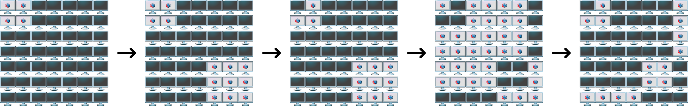

In June, Pak Dengklek and his family go on holiday to the city of Bogor. One day during their holiday, they visit the Binary Square Mall and come across a television attraction that catches their attention.
The attraction is displayed on a set of televisions that are arranged in the form of a square of size $N \times N$ with $N$ rows (numbered from $1$ to $N$) and $N$ columns (numbered from $1$ to $N$). The television located in the $r$-th row and the $c$-th column is denoted as television $(r, c)$. Each television can only be either turned on or turned off. Initially, each television is turned off.
There are $P$ changes that will happen. The $i$-th change is in the form of two integers $T_i$ and $W_i$.
When a television that is turned on changes state, then it becomes turned off. On the other hand, when a television that is turned off changes state, then it becomes turned on.
After all $P$ changes happen, Pak Dengklek has $Q$ questions. The $j$-th question asks about whether television $(X_j, Y_j)$ is turned on or turned off. Help Pak Dengklek answer all of his questions!
The input is given with the following format:
N P T1 W1 T2 W2 ⋮ TP WP Q X1 Y1 X2 Y2 ⋮ XQ YQ
For each question, output a single line containing 0 if the television being asked is turned off, or 1 if the television being asked is turned on.
7 5 1 2 2 5 1 1 1 6 2 1 4 1 1 6 5 2 7 4 3
0 1 1 0
The following is an illustration for the sequence of changes that occur.

The following are the positions of the televisions being asked.